15种偶然制造的东西 居然改变了世界
世界有必然，也有偶然。
任何事情都是从无到有的，有些东西是刻意创造出来的，但你可能想不到，有这么多你熟悉的东西，都是偶然的产物。
1 可口可乐
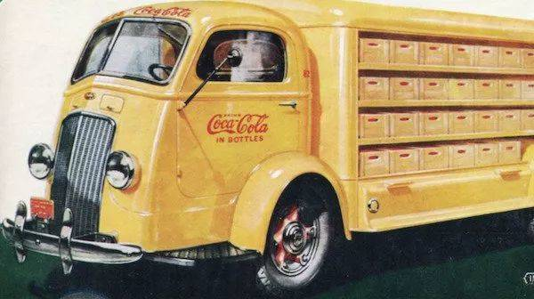
一位名叫John Pemberton的药剂师发明，他希望能够治愈头痛和焦虑，就从葡萄酒和古柯提取物(可卡因的根本成分)中提炼出一种糖浆。
后来由于他的家乡亚特兰大禁止出售酒精，他就从配方中去掉酒，并加入碳酸水，结果产生了世界最著名的饮料。
2 LSD
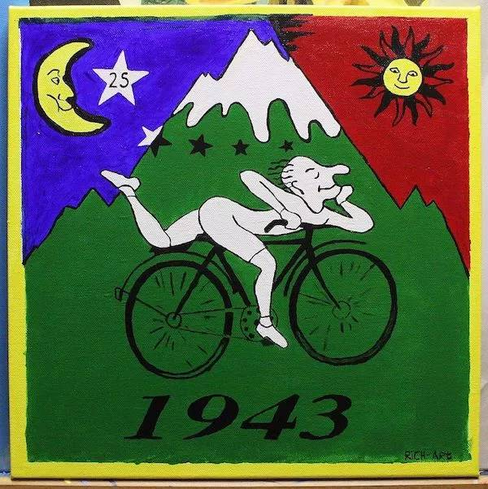
瑞士化学家阿尔伯特霍夫曼完全是意外创造了麦角酸二乙酰胺，万万没想到该化合物后来成为了青少年中最流行的迷幻药。
3 冰棍
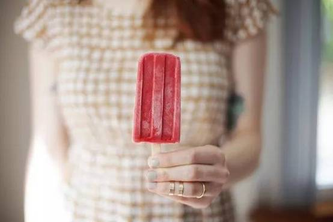
11岁的弗兰克埃普森是发明者，当时他想制作一种水果味的苏打水，将它放在雪地外面冷却。
结果他忘记了这件事，过了一夜才想起来，发现搅拌勺和冻成冰的苏打水变为了一体...一个传奇诞生了。
4 青霉素
苏格兰科学家亚历山大弗莱明爵士在寻找一种治愈所有感染的药物，并试验各种细菌，当时他注意到一种快速生长的霉菌在他的一个丢弃的培养皿中阻止了细菌生长，于是将霉菌分离出来单独培养，于是有了青霉素。
5 微波炉
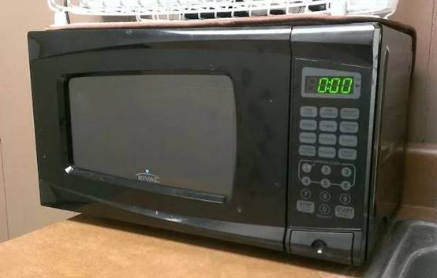
美国国防承包商雷神公司聘请珀西斯宾塞开发雷达技术。
当他用微波对真空管进行试验时，他注意到他口袋里的糖果棒正在融化。
随着灵感闪现，他抓起玉米放在靠近真空管的地方，然后它们变成了爆米花，这也是有史以来第一件由微波炉烹制的食物。
6 弹簧圈
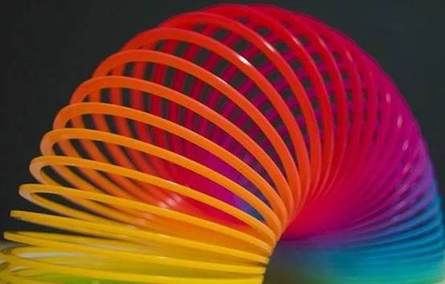
海军工程师理查德琼斯正在设计一个仪表，来测量船上的功率，并扔下一个拉力弹簧，看着它在地板上反弹。这时他觉得还不如制作一个玩具。他是对的。
7 不锈钢
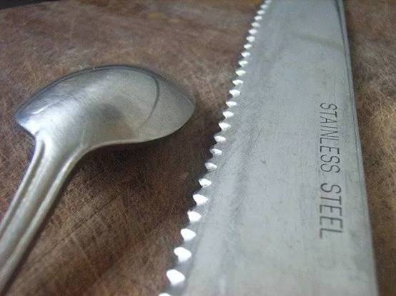
虽然几千年来我们一直在生产金属和冶炼金属，但没有人知道如何防止生锈。
1912年，一位名叫Harry Blearily的冶金学家正在试验制造不会磨损的枪管，几次失败尝试后，他发现垃圾堆里有一个样本不像其他的那样生锈。
因此，不锈钢诞生了。
8 伟哥
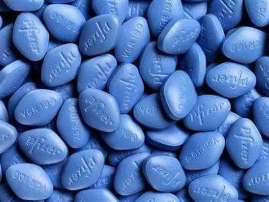
这种药物实际上是为治疗高血压而制造，测试中发现它对降低血压没有太大作用，但男性受试者经常勃起。
经过重新测试，蓝色小药丸在1998年被批准并成为治疗勃起功能障碍的药物。
9 糖精
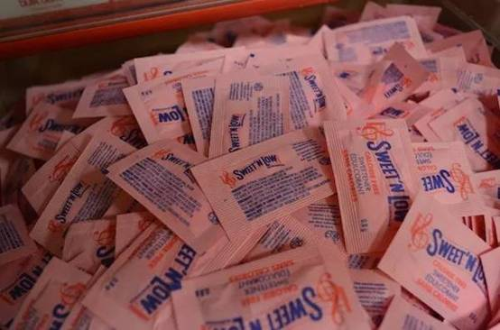
1879年，康斯坦丁法尔伯格正在研究煤焦油的新用途。
那天晚上，他发现妻子的饼干比平常甜得多。
当他试图弄清楚为什么时，他发现自己没有洗手，沾着实验室的测试残余物。
由此，糖精产生了。
10 X射线
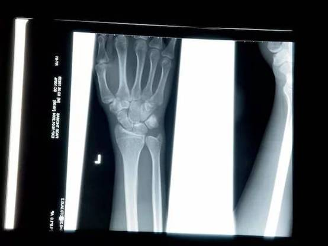
十九世纪末，一位德国物理学家在研究阴极射线时，把房间全部弄黑，还用黑色硬纸给放电管做了个封套。
可是当他切断电源后，却意外发现一米以外的一个小工作台上有闪光——这是一种新的无形的射线。
他在妻子的手上测试，发现光线会穿过皮肉、木头和其他物质，但不会穿过金属和骨头。
因为不知道如何称呼他的意外发现，就取名为"X"，代表未知数。
11 起搏器
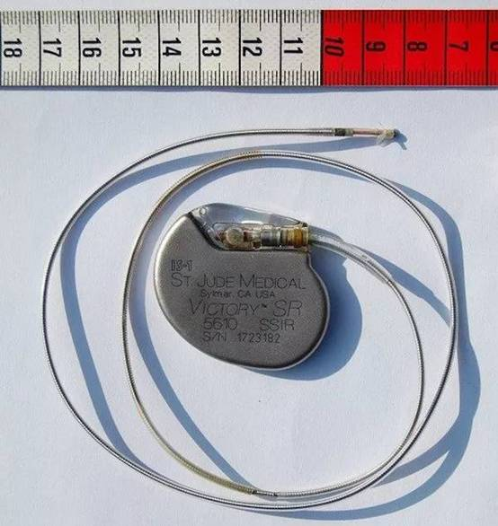
John Hopp是一位电气工程师，本世纪中叶他尝试使用射频加热来提高体温，结果发现电脉冲对身体的热量没有太大作用，却能够刺激心脏，并将其重新转换节奏，因此发明了起搏器。
12 冰淇淋甜筒
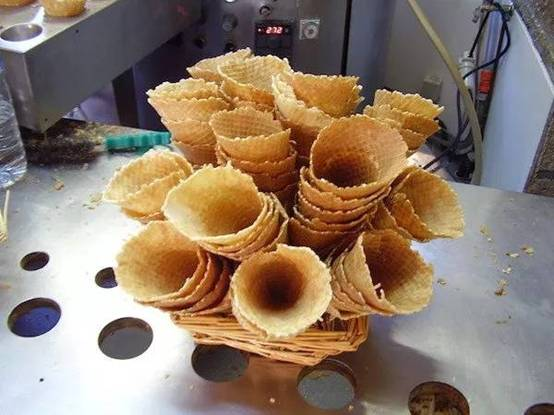
20世纪初，冰淇淋非常受欢迎，并以纸制，玻璃或锡制容器装盛，但是这些都不适合外卖。
在1904年的世界博览会上，一家冰淇淋供应商非常受欢迎，很快用完了纸杯。
旁边展位的热华夫饼干却卖得不好，于是他们就把华夫饼干卷起来当作冰淇淋容器。
这太棒了。
13 魔术贴
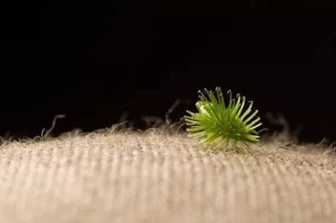
虽然传闻NASA发明了这个，但并非如此。
它实际上是电气工程师乔治·德梅斯特拉尔发明。当时他正在遛狗，并在狗的外套上发现粘了苍耳。
通过把它放在显微镜下，他发现苍耳上的钩子可以使其固定到其他物体上。
不久之后，他研究出尼龙是重现这种现象的最佳材料，并将其命名为魔术贴。
14 火柴
早在一千年前在中国就发明了火柴的化身，但不够实用。
本世纪初，英国化学家约翰·沃克在搅拌棒的末端发现了一块干燥的块状物，并混合了化学物质。
他刮掉它，并点燃。后来他开始在一个带有砂纸的铁盒中出售他的"摩擦棒"。
15 薯片
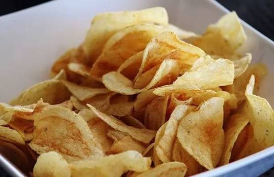
1853年，纽约一名厨师被顾客不断地抱怨炸薯条不够薄不够脆。
最后厨师生气了，就把马铃薯薄薄地切成薄片，然后油炸，直到酥脆为止。
这种食物因为美味，被作为新品添加到菜单中。